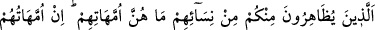
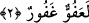

musunuz? O, Havle binti Sa’lebe’dir. Allah Teâlâ yedi kat göğün üzerinden onun sözünü
işitmiştir. Sözünü Âlemlerin Rabbinin dinlediği kadının sözünü Ömer dinlemesin mi?”
Hz. Ömer’in “göklerin üstünden” sözünde geçen fevk/üst kelimesi, Allah için bir yer
tesbit etmek gibi bir anlama gelmez. Çünkü Allah herşeyden yüce ve üstündür. Sonra
bilinmelidir ki, bir kimse din kardeşine “Allah’tan kork!” dediğinde, muhatabının, “sen
kendine bak, sen mi bana emredeceksin” tarzında cevap vermesi günahların en
büyüklerindendir. Çünkü, Allah’ın ismi zikredildiği zaman, O’na tâzim ve saygı
göstermek mutlaka gereklidir. Bu söz ister mümin ister inkârcı tarafından söylensin fark
etmez. İnsanların en bilginleri dahi uyarılmaya ve ikaz edilmeye muhtaçtır.
Doğru bildiğin faydalı sözü
Kimse beğenmese bile söyle
Denilir ki, akıllı kişiye yakışan odur ki, arı gibi her çiçekten alıp, her derde devâ ve
şifâ olan bal çıkarsın. Zira o faydalı mum gibi, özellikle de ışık saçan mum gibi
olmalıdır. İlim ve hikmet arayan onu nerede ve ne durumda bulursa alır. İster ayakta,
ister oturmakta olsun. Eğer kişinin bir mârifeti, bir iyiliği yoksa o mermer ve fildişi ile
süslenip nakışlanmış sûretten; şayed miskin de kokusu yoksa o da ceylan kanından başka
bir şey değildir.
2. İçinizden zıhar yapanların kadınları, onların anaları değildir. Onların anaları
ancak kendilerini doğuran kadınlardır. Şüphesiz onlar çirkin bir laf ve yalan
söylüyorlar. Kuşkusuz Allah, affedicidir, bağışlayandır.
“İçinizden zıhar yapanların kadınları…” Burada “Ey müminler!” hitâbı müminlere
olunca, zimmîler; yâni İslâm ülkesinde bulunan gayri müslimler onlara dâhil olmayıp
onların zıhar yapması sahih değildir. Çünkü zıhar keffâreti ibâdet ağırlıklıdır, zimmî ise
keffâreti ödeyecek durumda değildir. Âyet-i kerimenin bu kısmı, zıharın ve dini
hükmünün açıklanmasına bağımsız bir cümle ile bir başlangıçtır.
Zıhar lügat bakımından zâhere filinin masdarıdır. Eşine zıhar yapan erkek şöyle der:
“Sen bana anamın zahrı/sırtı gibisin.” Sırt vücudun bir organıdır. Bu sırt kelimesi
kinâye olarak karın yerine kullanılır. Dolayısıyla erkek karısına: “Sen bana anamın
karnı gibi haramsın” demiş olmaktadır. İslâmî terbiye gereği apış arasına yakın olduğu
için karnın dayanağı olan sırt, karın yerine kullanılmıştır. Sonra da sırt kelimesinin
arapça karşılığı olan zahr kelimesi söz konusu cümlede kullanıldığı için “karısına zıhar